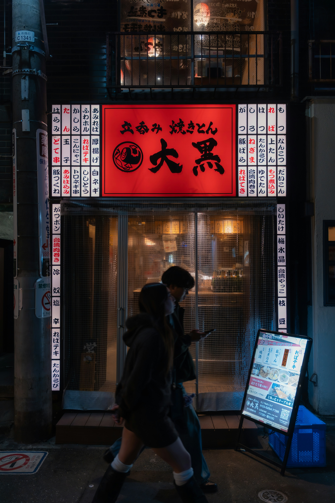

- 0~7세
- 8~13세(초등학생)
- 14~16세(중학생)
- 17~20(학교 밖 청소년)
- 21~25세(대학생)
- 현재
처음으로 만든 Web입니다. 인생이 망한 것 같아서 뭐라도 해보려다가 만들었어요.
고등학교 자퇴, 울산대학교 생명공학부 자퇴, 가야대학교 간호학과 자퇴! 인생에서 자퇴를 몇 번이나 하는 걸까요?
어릴 때부터 무엇 하나 끈기 있게 한 게 없거든요. 무서우면 도망 가고, 불안하면 도망가고...
"도망만 다닌 내 인생은 무가치했나?"

내 전공을 제외하고, 내가 할 수 있는 일이 뭐가 있을까?
조금이지만 일본어를 공부하고, 태권도도 했었지. 근데 직업으로 할 정도는 아닌 것 같았다.